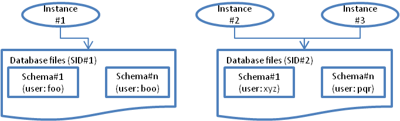
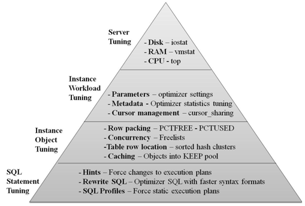

Basics
Basics
Instance
- Schema Is a collection of objects (tables, views,
indexes, stored procedures, etc) that is owned by a database user.
- A database user can own exactly one schema (may have access to
multiple) and hence in a JDBC connection, one need not specify the
schema to use. It's identified automatically based on the user's
credentials.
- There's a default user SYS/SYSTEM and associated schemas. The SYS
schema contains data dictionary for the database and the SYS user
has the highest priveleage.
- Database Is a collection of physical files (data
files, redo log files, control files, temp files, etc). These are
identified by a System identifier called as SID.
- Instance Is a set of Oracle processes (& their
shared memory area) that operate on a database. In most cases instance
== sid, but may differ in some cases, e.g. RAC where multiple instnaces
operate on the same database.
- Running more than one instance on a given physical server is _NOT_
a recommended practice. One instance can hit the system resources
hard and affect other instance.
- Tablespace Is a logical grouping for schema objects.
All schemas must belong to one of the tablespaces.
- Connection A connection created by client code to an
oracle instance process above. (1 instance --> many connections)
- Session A session created by client code over an
existing connection. (1 connection --> many sessions)

SQL
- Insert into <table> values (comma separated values)
- Insert into <table> (comma separated column names) values (comma
separated values)
- Update <table> SET <column>=value, <column>=value
WHERE <column> = value (Where clause is mandatory)
- Delete from <table> WHERE <column> = value (Where clause
is mandatory)
- Select from ....
- Not case sensitive
- DML (Data manipulation language)
- Select, update, delete, insert into
- DDL (Data definition language)
- create database, alter database
- create table, alter table, drop table
- create index, drop index
- Date/time handling:
Select
- Most likely optimizer will handle the correct ordering for Join but
it's better to look at the execution plans and validate.
- JOIN clause should occur before HAVING clause?
- If no column is selected and if it's a JOIN query, it will display
columns from all the tables.
- WHERE clause doesn't understand aggregate functions (e.g. select
employee, sum (bonus) from emp group by employee where sum(bouns) >
1000). In these cases, need to use HAVING clause.
- select * from transactions where login in ('john', 'peter', 'aj')
- select * from transactions where login like '%john%'
- select * from transactions where login between 'aj' and 'john'
(whether 'aj' and 'john' is inclusive depends on the DB!)
- select distinct login, transaction_city from transactions (distinct on
multiple columns)
- like (using %, _, [charlist], [^charlist], escape)
- like 'j%' : Everything starting with j
- lile 'a%j' : Everything starting with a and ending with j
- like 'tp_dd' : Matching exactly 5 chars beginning with tp and
ending with dd
- like '[bj]%' : Matching starting with b or j
- like '[^bj]%': Matching not starting with b or j
- like '!%aj' escape '!' : Maching exactly "%aj". Escape char
specified explicitely.
- Processing steps
- From/Where clause
- Rownum is assigned
- Select is applied
- Group by is applied
- Having is applied
- Order by is applied
Rownum, Rowid
- Rownum is a pseudo column assigned after retrieving the result set.
It's applied just after where clause so will not get applied to order by
or other clauses unless inner query is mechanism is used.
- Rowid identifies a physical location of a record and hence is always
present. It's unique within a table but mayhave
duplicate values across tables. If the record is physically
moved (e.g. index organized or partitioned tables), rowid will change.
Cursors
- Every query execution will have a cursor associated with it, either
explicitly requested by the client code or implicitly created by Oracle.
This can be used to fetch result values.
- It's a good practice to close the cursor, not just the connection,
from Java programs. A bad JDBC driver may not close the cursor during
connection close and will lead to "max open cursors" error.
Connection conn = dataSource.getConnection();
try{
PreparedStatement stmt =
conn.prepareStatement();
//initialize the statement
stmt.execute();
ResultSet rs = stmt.getResultSet();
//get data
}finally{
stmt.close();
rs.close();
conn.close();
}
Hierarchical
data
- SQL is about SETs and not meant for hierarchical data (e.g.
company->dept->sub-dept-> or ceo->executive mgmt->senior
mgmt->mgmt->employees).
- There are ways in which it can be modelled (see Nested Sets, Common
table expressions) and many modern DBs support special syntax for
recurssive traversal.
Best
Practices
Storing
binary data
Pros
- You can commit the update of the document itself in the same
transaction as the information (name, date etc) you want to store about
the document. This means you don't have to worry about writing your own
two-phase commit (although ISTR that SQL Server 2008 has a solution for
this).
- You can back up the whole lot (documents and metadata) at once,
without worrying about having to synchronise the database with the file
system
- You can deliver documents very simply over .NET web services, since
they come straight out into DataTables, and are serialised effortlessly
just by putting the DataTables into a DataSet and passing it.
- You can apply database security to the objects, as to the rest of your
data, and not have to worry about network file permissions.
Cons
- Backups
can get very large
- The
size of the binary object in the database can be quite a bit larger than
the file it originally came from, and therefore in a client-server
environment, it can increase the time taken to open them across the
network.
- Depending
on the application, you might need to consider the load on the database
server if it has to serve up a lot of large documents.
- Binary
files lose their 'fileness'
Oracle
init.ora
- Is the overall configuration for a given Oracle instance and has a
huge impact on the overall performance.
- Optimizer settings
- optimizer_mode
- = first_rows: Will favour index access over full table scan to
return rows as quickly as possibile. In some cases, it may
result in more resource consumption (e.g. indexed access has to
first read indexes and may in some cases incur additional io
overhead).Usually used for online systems
- = all_rows: Will favour full table scan when server resources
will be minimized. Usually used for batch
systems.
- Explain plan
on sql prompt
explain plan for "sql statement";
set linesize 132
select * from table (dbms_xplan.display);
AWR
Optimization
places

Report summary
Before
comparing
- Make sure ora.init params are same
- begin/end snap timings are similar
- load characteristics are similar (e.g. no. of requests, pass/fail
ratio, no. of concurrent users)
Cache sizes
- Compare cache sizes to see differences between cache effectiveness.
- If Shared pool size is increasing, it may indicate usage of SQLs
without bind variables.
- Buffer cache Is a cache of blocks read from disk.
- Is segmented into multiple sets to redue contention on
multipprocessor systems.
- Has multiple pools
- Keep pool: Small objects that should always be cached, e.g.
look up tables
- Recycle pool: Larger objects which are arranged based on
MRU-->LRU
- Default pool
- Shared pool cache Stores metadata like query plans,
parsed SQL statements, open cursors.
- Should remain of same size, else indicates that bind variables are
not being used
- Log Buffer Caches redo logs that are being written
for each transaciton.
- Must be flushed to disk along with transaction commit.
- Redo disks must be able to support rates equal to sum of rates
across all data disks. The buffer is written synchronously.
- A small value will result in high "redo log space request event"
while high value will result in high "log file sync" events.
- Std block size Blocke size used by Oracle to store
disk blocks.
- If a small value is used, it may have large space overhead since
each block needs to maintain metadata. It's efficient in cases where
row sizes are small and have lots of random access. This is because
there's less contention.
- If a large value is used, it may waste space when doing random
access (e.g. 50 byte record size in an 8K block). It's also not good
for index blocks since it increases block level contention. It's
good for sequential access or large rows.
Load profile
- Gives an idea of the work profile on the database.
- Redo size indicates the overall work. Note that it's
not just Update/delete but Select may also cause redo
to be generated if it has to read blocks in cache (i.e. not available in
buffer) and in doing so it may touch(dirties) the block headers. These
must be written back to the disk.
- Logical reads Is equal to consistent get + DB block
gets
- DB block gets is more of internal processing by Oracle.
- Consistent get is reading of a block from buffer cache. A check
will be made if data needs to be reconstructed from rollback logs to
get a consistent reads isolation level.
- Aim should be to minimize consistent gets even though these are
from cach. These represent the work DB is doing and SQLs can be
tuned to read less. Also, Oracle must acquire a latch before each
consistent get resulting in contention.
- Block changes Is the total no. of changes to data
blocks due to DMLs. Note that a single insert may cause changes to more
than one block if indexes are included.
- User calls Is the total number of calls client makes
to the instance. Oracle allocates internal structures (call stat
objects) to keep track of relevant user data structures for every login,
parse, execute statement. This should be minimized.
- Parses Every SQL statement must be parsed before
execution. The steps involved are:
- Syntax check as per the grammer.
- Semantic check: do the tables actually exist, does user have
rights, column name ambiguity (e.g. select c1 from t1, t2 and both
t1/t2 have column c1)
- Check if shared pool already has the SQL
- For SQL to be identical, all characters must match, all
objects must match.
- e.g. "select NAME from customer" is different from "select
name from customer"
- e.g. "select NAME from customer" is different if accessed by
"xyz" and by "pqr"
- If bind variables are not used, it will result in many unique
SQLs
- "select name from customer where id = 1234" is different
than "select name from customer where id = 9999"
- Use "select name from customer where id = :cust_id"
- Below statements require a latch on shared pool
- Allocate memory in shared pool (if no memory free in shared pool,
it must age out previous entries)
- Get values of bind variables and see if values fit in the selected
columns (no. of columns specified vs no. of values specified)
- Optimize query execution (consumes a lot of CPU)
- Build the parse tree and execution plan in a format that SQL can
use (row source generation)
- Store in shared pool
- Soft parse Finds parsed SQL at step 3 and doesn't
have to execute rest of the statements.
- Hard parse all the steps above.
- If no of parses are high, it typically happens in stateless client
where client code does a prepare every time instead of creating one time
and reusing.
- Sorts Oracle will perform sorting on row data when
using "order by" and "group by" and when an index is created.
- Sorting can be during rows retrieval or after rows retrieval. This
a is influenced by a number of parameters including some optimizer
settings.
- Sorting can be very costly on large data sets. If the results do
not fit in-memory, temp tables must be used.
Instance
efficiency
- Aim is to reach close to 100% for each of the metric. However, note
that these are to be used as a supplement. Ratios hide scale -- a 100%
soft parse ratio appears good but may be a terrible thing if total no.
of soft parses per sec is way too high. Always look at this data along
with per seond data in Load Profile section.
- Buffer nowait % How many times the data buffers were
accessed without wait (i.e. no contention). This includes all buffers so
if this ration is low, one can look in buffer stats to investigate
further.
- Buffer hit ratio % How many times the required block
was found in memory instead of having to do physical IO.
- Library hit % How many times SQL statements and
PL/SQL packages were found in shared pool.
- Execute to Parse % Ratio of no. of parses vs no. of
executes. Is equal to round(100*(1-parse/exeute),2)
- If parses = execute this ratio will be close to zero
- if parses > execute (app parses the stmt but never executes
it), this ratio will be negative.
- If parses < execute, this ratio will be positive.
- If this ratio is low, it's indicative that client code is not
reusing a preparted statement but rather creating it every time.
This would lead to parse during every execute and bring down the
ratio.
- Parse CPU to parse Elapsed % Ratio of CPU time spent
actually parsing SQL statements vs total elapsed time during parse.
- Redo no wait % How many times redo log buffers were
acquired without having to wait. Gives an indication whether redo log
buffers are of sufficient size.
- In-memory sort % How many times sorts are performed
in memory instead of using temp table
- Soft parse % No of times SQLs were soft parsed.
- Latch hit nowait % How often latches were acquired
without having to wait.
- % Non parse CPU How much CPU resources were spent on
actual SQL execution.
Shared pool
statistics
- Memory usage % If
a lot of shared pool memory (e.g. 90%) is consumed then system may
experience overheads aging out old data structures.
- % SQL with executions >1 How many SQLs were
executed more than once. Indicates whether SQLs are being reused.
Report Details
Wait event statistics
- Top areas where DB is spending time waiting.
- DB file type waits - physical io
- Buffer type waits - logical io
- LOG type waits - redo related
- Px - Parallel query
- GC - Global cache (RAC) related
- Two main IO events in Oracle
- db file sequential read Is a wait event by DB for
OS to return a single disk block. This typically happens when Users
do a index query and the block is not available in Cache.
- db file scattered read Is a wait event by DB for
OS to return multiple disk blocks. This typically happens when Users
do a full table scan.
- CPU time Is the time spent on CPU doing actual work.
- It's not a wait event and hence the wait column will be empty.
- If the number is 37,677seconds.... Assuming 7 hr load window and 2
CPUs, total seconds = 50400 seconds (2*7*60*60). So % time spent on
CPU is 74% and system is clearly CPU bound.
- Note that this would be same as DB CPU in time model statistics
below. However, the one in "Top 5" timed event is shown only at the
end of query execution while the one in "Time model statistics" is
incremented at short intervals so depending on when the report was
taken, these values may differ.
- Log file sync indicates that the process is waiting
for LGWR to finish flushing the redo log buffer to disk. This occurs
when a user commits a transaction.
- If this event has high value but if the avg wait time is low, it
indicates that app is doing too many commits rather than batching.
- If this event has high value and if the avg wait time is high, it
- Common solutions to eliminate these wait events is to use faster
redo disks and increasing the log-buffer size.
- Log file parallel write indicates the time LGWR spent
waiting to write groups of redo logs.
- When client commits a transaction, it waits on Log file sync for
LGWR to complete the write.
- LGWR in turn will wait on Log file parallel event. However, there
may not be 1:1 correspondence, since LGWR will group together redo
log writing for many sessions. 50 people issue commit and they wait
1 unit of time, and lgwr takes 1 unit of time to do it's write, you
will have 50 units of log file sync wait time and 1 unit of lgwr IO
time.
Time model
statistics
- Shows where system is
spending time.
- Most important metrics are DB time and DB CPU.
- Time is shown as absolute value and also % of total DB time.
- SQL processing
time should be high, parsing and other stuff low
- DB time
Total time in database calls by foreground sessions. Includes CPU time,
IO time, non-idle wait time.
- If User is not
doing any activity, it will _not_ add up to DB time (note it doesn't
include time from background processes)
- DB time increases as system load increases and also as performance
degrades
- If there are
more users, there will be more database calls and will effect DB
time.
- If there are
larger transactions, there will be more SQLs per call and will
effect DB time.
- If application performance degrades, there will be more
elapsed time per SQL and will effect DB time.
- If IO is
slower, IO wait time will increase and will effect DB time.
- If server is
CPU bound, foreground processes will wait longer in run-queue,
there will be increases in wait event times and will effect DB
time.
Foreground
wait events
Foreground = user process
Usually most important
Usual source for top 5
wait events
Classes & events.
Classes are rolled up sums for waits.
Background
wait events
For background processes
- PMON, SMON, LMON, DBWR etc
Service
related stats
Grouping of processes
Examples
Buffer cache ratio 99%, yet db sequential reads are high
- Ratios hide scale... If the volumes are very high, the 1% physical
reads re may be It will take 100 buffer gets for every physical read.
So, if there are small tables which are cached and are frequently
accessed, these will make the ratio high.
- If db sequential reads are high, look at SQLs by reads
- If db sequential reads are high and buffer cache ratio is high too,
look at SQLs by gets.
Time model statistics
- SQL execute is 90%, DB CPU is 20%. There may be lots of waits.
- In general, SQL processing should be more, parsing and others should
be small
log file sync
- If log file sync events are high, typically log file parallel write
events would be high too.
- If the avg wait for these metrics is less (few ms), then the only
issue is no. of transactions doing commits.
References
- http://www.w3schools.com/sql/sql_syntax.asp
- http://www.programmerinterview.com/index.php/database-sql/find-maximum-value-without-using-aggregate/
(Look at compare problem)
{kind=link}